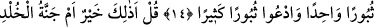
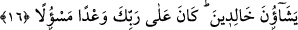

İNKARCILARA CEHENNEM
TAKVÂ SAHİBLERİNE CENNET
11. Onlar üstelik kıyâmeti de yalan saydılar. Biz ise, kıyâmeti inkâr edenler için
alevli bir ateş hazırladık.
12. Cehennem ateşi uzak bir mesafeden kendilerini görünce, onun öfkelenişini
(müthiş kaynamasını) ve uğultusunu işitirler.
13. Elleri boyunlarına bağlı olarak onun (cehennemin) dar bir yerine atıldıkları
zaman, oracıkta yok oluvermeyi isterler.
14. (Onlara şöyle denir:) Bugün (yalnız) bir defa yok olmayı istemeyin; aksine
birçok defalar yok olmayı isteyin!
15. De ki: Bu mu daha iyi, yoksa takvâ sâhiplerine vaad edilen ebedilik cenneti
mi? Orası, onlar için bir mükâfat ve (huzûra kavuşacakları) bir varış yeridir.
16. Onlar için orada ebedî kalmak üzere diledikleri her şey vardır. İşte bu,
Rabbinin üzerine (aldığı ve yerine getirilmesi) istenen bir vaaddir.
“Onlar üstelik kıyâmeti de yalan saydılar.” Kâfirler kıyâmet gününü, haşr ve
dirilmeyi inkâr ettiler. Saat zaman dilimlerinden bir bölümdür. Kur’ân’da saat
kelimesiyle kıyâmet günü kasdedilir. Kıyâmet gününde hesap süratli olduğundan saate
benzetilir. Nitekim âyette “Allah hesâba çekenlerin en hızlısıdır.” (el-En‘âm, 6/62)
buyrulmuştur. Ya da kıyâmete ‘saat’ denilmesi, “Onları bir araya topladığı gün, sanki
onlar sadece gündüzün, görüşüp tanıştıkları bir saati kadar dünyada kalmış
olurlar.” (Yûnus, 10/45) âyetinde dikkat çekildiği gibi dünya hayâtı bir saat gibi kısa
olduğu içindir. Nitekim el-Müfredât’ta böyle geçmektedir.
Bu âyetle onların önceki suçlarının hikâye edilerek azarlanmasına son verilmekte ve
diğer bir suçları anlatılarak azarlanmalarına geçilmektedir. Böylece onların işledikleri
suçlar sebebiyle âhirette uğrayacakları türlü azâblar açıklanmaktadır.
“Biz ise, kıyâmeti inkâr edenler için alevli bir ateş hazırladık.” Âyette zamir ile
değil de bizzat “saat/kıyâmet” kelimesinin zikredilmesi, kötülemede mübalağa yapmak